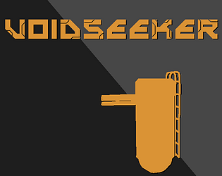
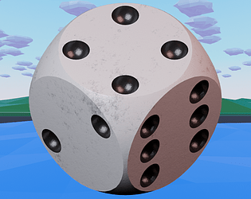
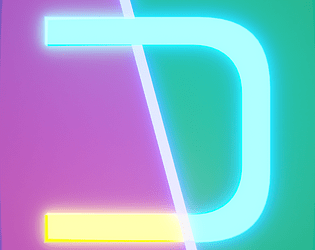
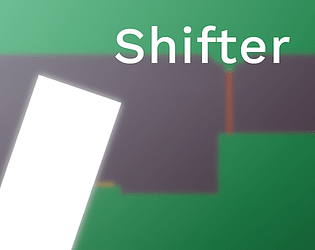

|

Voidseeker
A Voidseeker™ a legújabb játék a katalógusból, melyet egy teljesen új játékmotorban, Godot 4-ben készítettünk. Maga a játék egy gyors, kidolgoztt first person shooter, ahol egyre mélyebbre mész a voidba, hogy felfedezd titkait.
|

Mountain roll
Egy 3D rage platformer, ahol egy kockát kell elpattintani a célvonalig. A gameplay ebben nem a legerősebb, de a grafika és a mély történet egy új szintre emeli a játékot.
|
|

Dissonance
A legnagyobb játék a katalógusból, a Dissonance végig követi bátor Jimmyt, ahogy dimenziók között ugrálva érdekes rejtvényeket old meg.
|

Shifter
Az első játék amit a csapatunk készített, ez a projekt adta az alapot az újabb, frissített verzóra, amiből végül a Dissonance lett
|